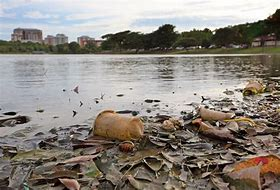

Qual é o Meio Ambiente?
O meio ambiente é o espaço em que ocorre a vida dos organismos e que permite sua interação . É composto de seres vivos ( fatores bióticos ), elementos não-vida ( fatores abióticos ) e elementos artificiais criados pelo homem.
Importância do Meio Ambiente
Todos os organismos obtêm do meio ambiente todos os elementos de que precisam para viver: do ar e da água, ao abrigo e aos alimentos que lhes permitem crescer, desenvolver-se e obter energia . Manter o equilíbrio do meio ambiente é essencial para sustentar a vida na Terra como a conhecemos.
Além disso, o ser humano utiliza uma grande quantidade de recursos naturais do meio ambiente para atender às suas necessidades, como roupas, alimentos e objetos do cotidiano, entre outros exemplos. Por isso, o ser humano deve conhecer e cuidar de suas interações com o meio ambiente para administrar de forma sustentável os recursos naturais que permitem seu crescimento e desenvolvimento econômico .

Transformação do Meio Ambiente
Ao longo dos anos , as espécies vegetais e animais evoluíram e se adaptaram a diferentes ecossistemas . A aquisição de características que lhes deram tolerância para resistir em determinado ambiente fez com que algumas espécies perdurassem ao longo do tempo , enquanto outras que não conseguiam se adaptar se extinguiam.
Muitas das transformações no meio ambiente ocorrem naturalmente e não dependem do ser humano, por exemplo, mudanças no ecossistema que podem ser geradas pela erupção de um vulcão ou inundação.
No entanto, a maioria das mudanças no meio ambiente são causadas pela ação humana . O homem é o organismo vivo que mais intervém no meio ambiente: ele não só cria o meio artificial, mas também explora, modifica e utiliza os recursos do meio natural para sua sobrevivência e bem-estar.
Embora algumas das transformações introduzidas pelo homem não tenham impactos negativos significativos sobre o meio ambiente, muitas outras trazem danos irreversíveis como resultado da poluição e destruição do meio ambiente.
O homem tem modificado o ambiente natural por meio da urbanização, do uso excessivo dos recursos naturais e da industrialização .
Explicamos o que é o ambiente e quais os elementos que o compõem. Além disso, as causas de sua contaminação e como protegê-la.